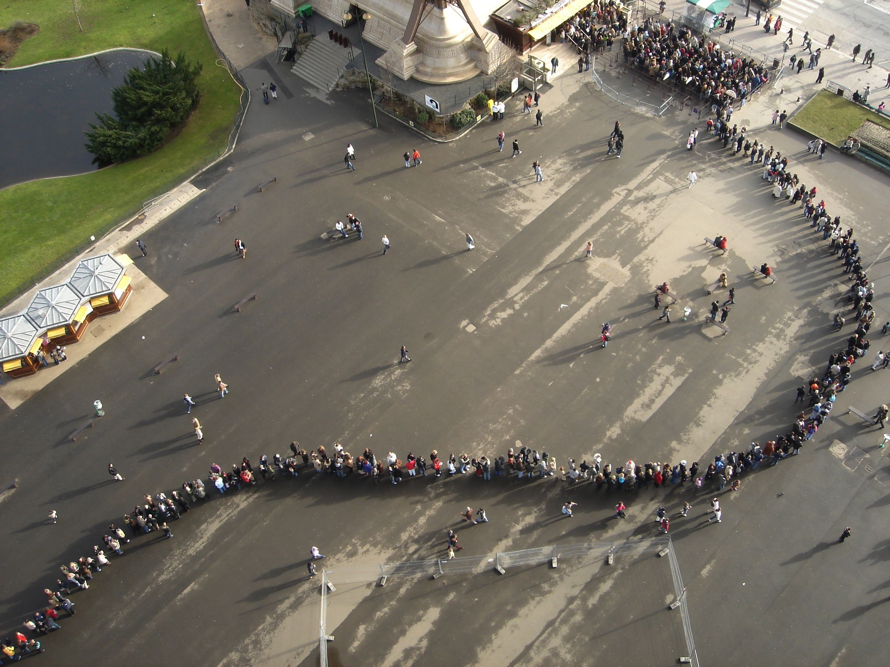
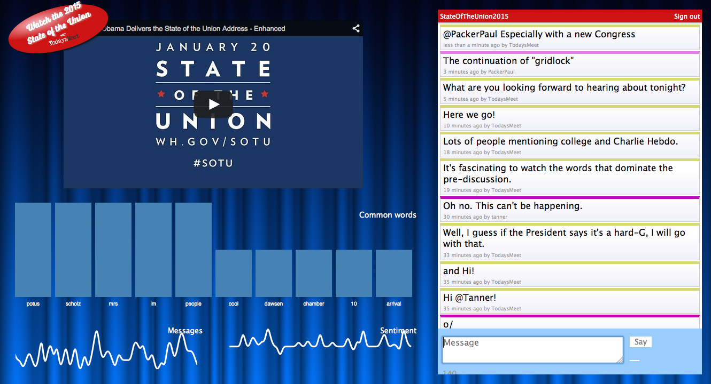
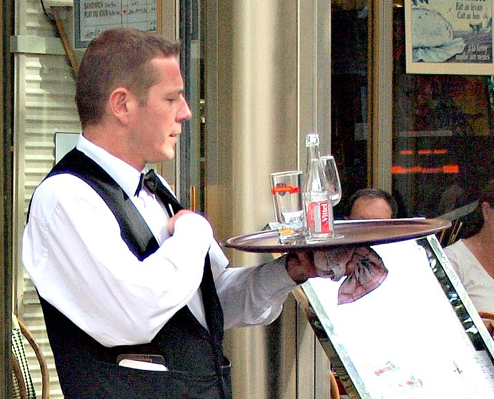
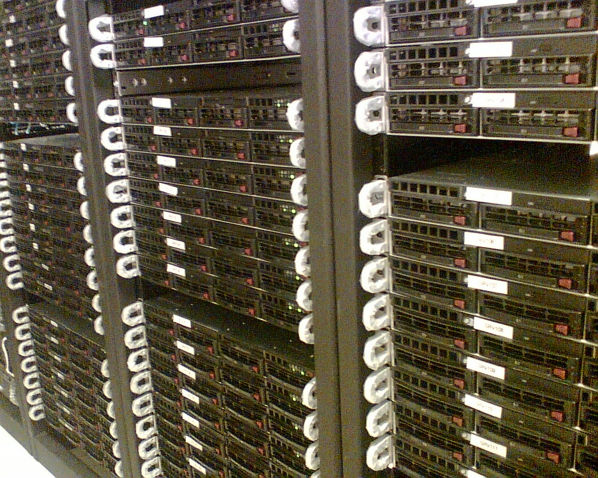
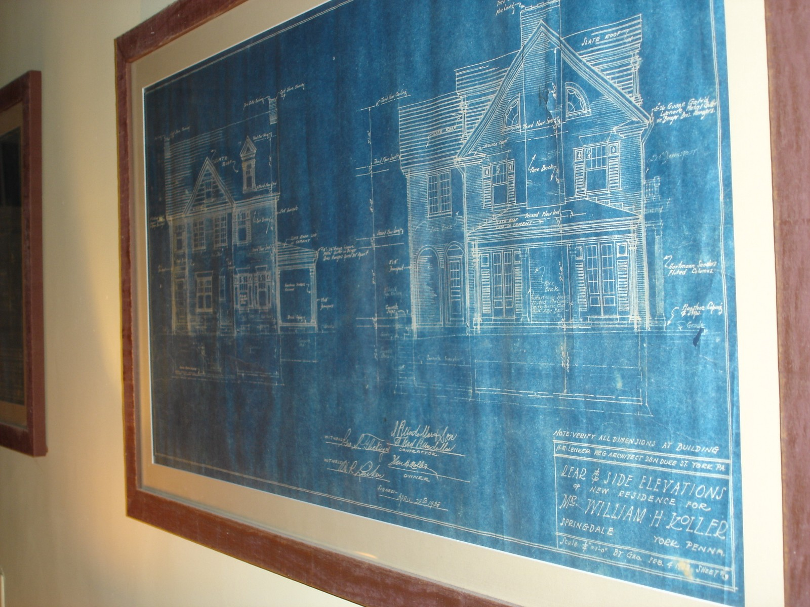
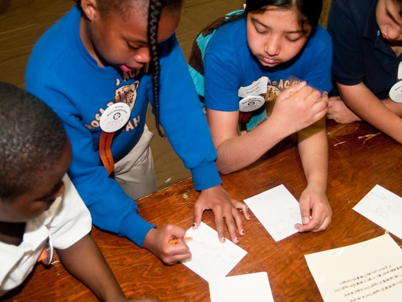
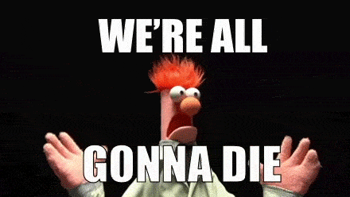
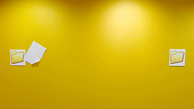
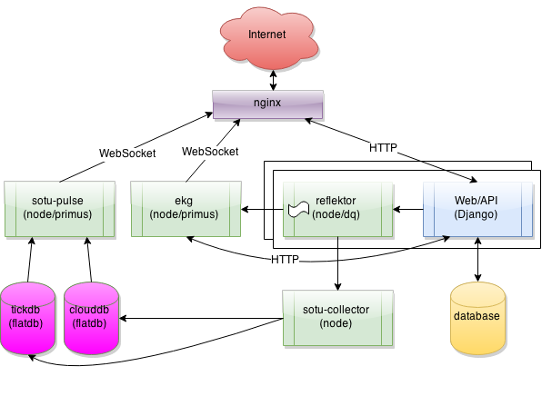
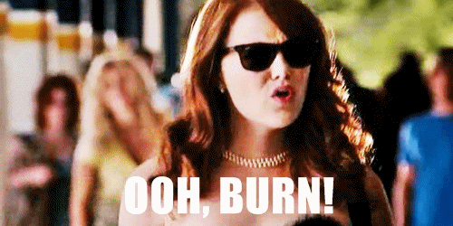

<!DOCTYPE html>

<meta charset="utf-8">
<title>Now You're Thinking with Queues!</title>

<!-- Your Slides -->
<!-- One section is one slide -->

<section class="title">
  <figure>
    
    <figcaption>
      <h1 style="margin-top: 0; color: #fff; text-shadow: 2px 2px 2px #000;"><small>Now You're Thinking with</small> Queues!</h1>
    </figcaption>
  </figure>
  <footer style="font-size: 50%">
    James Socol<br>
    Manhattan JS<br>
    8 April 2015
  </footer>
  <details>
    Who am I?<br>
    A developer. Spent time at Mozilla. At Bitly.<br>
    A lot of this is from my time at Bitly.<br>
  </details>
</section>

<section>
  <div class="figure incremental">
    
    <h2 style="margin-top: 0;">Chatrooms for Classrooms</h2>
  </div>
  <details>
    Real-time backchannel chat for schools. Solidly medium-sized.<br>
    Spent last year on it.<br>
    Show how queues solved problem and built feature very quickly.
  </details>
</section>

<section>
  <figure>
    
  </figure>
  <details>
    2 day project: real-time analysis of comments about the SotU.
  </details>
</section>

<section>
</section>

<section>
  <h2>Where are we going?</h2>
  <details>
    What is this talk about?<br>
    This is about the server.
  </details>
</section>

<section>
  <figure>
    
  </figure>
  <details>
    Like...no not that server
  </details>
</section>

<section>
  <figure>
    
  </figure>
  <details>
    Better! Mostly server-side, but really about distributed services. Browser is a part of a bigger system.<br>
    Some ideas hopefully useful in other contexts.
  </details>
</section>

<section>
  <figure>
    
  </figure>
  <details>
    Uh... "distributed?"
  </details>
</section>

<section>
  <figure>
    
  </figure>
  <details>
    Some of this will be familiar to JS devs who are used to event-driven.
  </details>
</section>

<section>
  <figure>
    
  <details>
    Queue-based architecture. "Thinking with Queues"
  </details>
</section>

<section>
  <figure>
    
  <details>
    How to solve problems with queues.
  </details>
</section>

<section>
  <details>
    So, what the hell am I talking about?
  </details>
</section>

<section>
  <h2><small style="font-size:36px">What we talk about when we talk about</small><br>Queues</h2>
  <details>
    Distributed message queues, not single-process "queue"<br>
    In CS: queue is a datastructure. Data goes in one end comes out the other, in order.
  </details>
</section>

<section>
  <pre>queue = [];
queue.push(obj);
obj = queue.unshift();</pre>
  <details>
    Easy to implement in JS.
  </details>
</section>

<section>
  <pre>emitter.on('message',
  function(msg) {
});</pre>
  <details>
    Message queue very much like an eventemitter.<br>
    Messages are published, don't necessarily know who's listening
  </details>
</section>

<section>
  <h3>Distributed is Different</h3>
  <ul class="incremental">
    <li>Distinct "producer" and "consumer"</li>
    <li>No order guarantee</li>
    <li>Messages delivered ≥ 1 time</li>
    <li>Data is one-way</li>
    <li>1000s of times slower</li>
  </ul>
  <details>
    Writer/reader can be on diff procs, boxes, diff languages<br>
    Multiple sources, retries, can't guarantee order<br>
    Networks fail, ≥1 or ≤1, but not ==1<br>
    Data moves one way, "return" values on another queue<br>
    Many orders of magnitude slower—but that's OK!
  </details>
</section>

<section>
  <h2 class="blink">DIVERSION</h2>
  <details>
    Speaking of 1000s of times slower...
  </details>
</section>

<section>
  <figure>
    
  </figure>
  <details>
    Tend to assume everything has to be critical, instant.
  </details>
</section>

<section>
  <h2>Relax</h2>
  <details>
    But if it takes 50 (UI) 500 (network) 5000ms (eternity) often OK.<br>
    UI can hide lots of that, too!<br>
    Be calm, be honest, be human.<br>
    Accept 90%iles. If "usually" 100ms, but may be worse, that's often great
  </details>
</section>

<section>
  <h2>Queue Everything</h2>
  <details>
    So says Les<br>
    Say Twitter: UI ≤50ms, but DB ≤200ms is fine.<br>
    5,000ms to mutual follower timeline<br>
    50,000ms to non-mutual follower<br>
    500,000ms to push notification. Not great, but not that bad, either
  </details>
</section>

<section>
  <figure>
    
  </figure>
  <details>
    So remember: don't panic. Carry a towel. We should really just relax.
  </details>
</section>

<section>
  <h2 class="blink">&lt;/DIVERSION&gt;</h2>
  <details>And we're back in</details>
</section>

<section>
  <details>
    OK, so what good are all these? They sound terrible!<br>
    Slow, weird "guarantees"<br>
    Look at examples!
  </details>
</section>

<section>
  <div class="figure">
    
  </div>
  <details>
    TodaysMeet, two main components:
  </details>
</section>

<section>
  <figure>
    
  </figure>
  <details>
    Posts come into "TM" Django app, save to database, pushed to node/primus EKG streaming app.<br>
    During deploys, EKG restarts, posts failed!<br>
    Users saw error--better than dropping messages
  </details>
</section>

<section>
  <figure>
    
  </figure>
  <details>
    Reflektor is—essentially—a specially built distributed message queue<br>
    Runs on each box—no order at EKG; can use neighbors<br>
    Retries delivery, ≥1<br>
    Localhost, very fast, HTTP-request-specific<br>
    Messages <em>usually</em> ≤100ms, had to fix multiple-delivery
  </details>
</section>

<section>
  <figure>
    
  </figure>
  <details>
    Reflektor is based on the data model from NSQ<br>
    Bitly, Go, Open source, very nice operationally<br>
    Really useful is the data model:
  </details>
</section>

<section>
  <figure>
    
  </figure>
  <details>
    Publish to a "topic", copied to each "channel"<br>
    Delivered ≥once to each channel
  </details>
</section>

<section>
  <details>
    That helps build new features <em>really</em> fast<br>
    Politics always been important for TodaysMeet. Lots of classes use<br>
    2.5 days before SotU2015, decided to do something special
  </details>
</section>

<section>
  <figure>
    
  </figure>
  <details>
    Thanks, Obama!
  </details>
</section>

<section>
  <figure>
    
  </figure>
  <details>
    Real-time analysis of comments: how many, what popular words (wordcloud), what tone<br>
    Because of NSQ-style queue, able to dip into the stream and get a copy of all messages
  </details>
</section>

<section>
  <figure>
    
  </figure>
  <details>
    No...
  </details>
</section>

<section>
  <figure>
    
  </figure>
  <details>
    better...
  </details>
</section>

<section>
  <figure>
    
  </figure>
  <details>
    Add channel/copy to collector process.<br>
    <small>quick details not important</small><br>
    able to burn it down just as quickly
  </details>
</section>

<section>
  <figure>
    
  </figure>
  <details>
    DAMNIT, I give up
  </details>
</section>

<section class="title">
  <h2>Thank you!</h2>
  <footer style="font-size: 50%">
    James Socol<br>
    Manhattan JS<br>
    8 April 2015
  </footer>
</section>

<section class="title">
  <h1 style="font-size: 72px">
    me<span style="color: #55acee; font-size: 98%;">@jamessocol</span>.com<br>
     jsocol
  </h1>
  <footer style="font-size: 50%">
    James Socol<br>
    Manhattan JS<br>
    8 April 2015
  </footer>
</section>

<section class="title">
  <h2>bit.ly/manhattanjs-queues</h2>
  <footer style="font-size: 50%">
    James Socol<br>
    Manhattan JS<br>
    8 April 2015
  </footer>
</section>

<!-- Your Style -->
<!-- Define the style of your presentation -->

<style>
  @font-face {
      font-family: 'MuseoSans900';
      src: url('font/MuseoSans_900-webfont.woff') format('woff');
      font-weight: 900;
      font-style: normal;
  }
  @font-face {
      font-family: 'CallunaRegular';
      src: url('font/Calluna-Regular-webfont.woff') format('woff');
      font-weight: normal;
      font-style: normal;
  }
  html, .view body { background-color: black; counter-reset: slideidx; }
  body, .view section { background-color: white; border-radius: 12px }
  /* A section is a slide. It's size is 800x600, and this will never change */
  section, .view head > title {
      /* The font from Google */
      font-family: 'CallunaRegular', arial, serif;
      font-size: 30px;
  }

  .view section:after {
    counter-increment: slideidx;
    content: counter(slideidx, decimal-leading-zero);
    position: absolute; bottom: -80px; right: 100px;
    color: white;
  }

  .view head > title {
    color: white;
    margin: 1em 0 1em 0;
    text-align: center;
  }

  h1, h2 {
    font-family: 'MuseoSans900', Arial, sans-serif;
    font-size: 80px;
    margin-top: 160px;
    text-align: center;
  }
  h3 {
    font-family: 'MuseoSans900', Arial, sans-serif;
    font-size: 48px;
    margin: 60px 0 30px 100px;
  }

  ol, ul {
      font-size: 130%;
      margin: 30px 100px;
  }

  section > ol:first-child,
  section > ul:first-child {
    margin-top: 50px;
  }

  p {
    margin: 75px;
    font-size: 50px;
  }

  blockquote {
    height: 100%;
    background-color: black;
    color: white;
    font-size: 60px;
    padding: 50px;
  }
  blockquote:before {
    content: open-quote;
  }
  blockquote:after {
    content: close-quote;
  }
  pre {
    background-color: white;
    color: black;
    font-family: consolas, "courier new", fixed-width;
    font-size: 44px;
    height: 100%;
    padding: 20px;
    width: 100%;
  }

  .blink {
    animation: blink 1s ease-in-out infinite;
  }

  @keyframes blink {
    0% {
      color: #fff;
    }
    50% {
      color: #000;
    }
    100% {
      color: #fff;
    }
  }

  /* Figures are displayed full-page, with the caption
     on top of the image/video */
  figure {
    background-color: white;
    width: 100%;
    height: 100%;
  }
  figure > * {
    position: absolute;
  }
  figure > img, figure > video {
    width: 100%; height: 100%;
  }
  figcaption {
    margin: 70px;
    font-size: 50px;
  }

  footer {
    position: absolute;
    bottom: 0;
    width: 100%;
    padding: 40px;
    text-align: right;
    background-color: #F3F4F8;
    border-top: 1px solid #CCC;
  }

  /* Transition effect */
  /* Feel free to change the transition effect for original
     animations. See here:
     https://developer.mozilla.org/en/CSS/CSS_transitions
     How to use CSS3 Transitions: */
  section {
    -moz-transition: left 400ms linear 0s;
    -webkit-transition: left 400ms linear 0s;
    -ms-transition: left 400ms linear 0s;
    transition: left 400ms linear 0s;
  }
  .view section {
    -moz-transition: none;
    -webkit-transition: none;
    -ms-transition: none;
    transition: none;
  }

  .view section[aria-selected] {
    border: 5px red solid;
  }

  /* Before */
  section { left: -150%; }
  /* Now */
  section[aria-selected] { left: 0; }
  /* After */
  section[aria-selected] ~ section { left: +150%; }

  /* Incremental elements */

  /* By default, visible */
  .incremental > * { opacity: 1; }

  /* The current item */
  .incremental > *[aria-selected] { opacity: 1; }

  /* The items to-be-selected */
  .incremental > *[aria-selected] ~ * { opacity: 0; }

  /* The progressbar, at the bottom of the slides, show the global
     progress of the presentation. */
  #progress-bar {
    height: 2px;
    background: #AAA;
  }

  .title footer {
    background-image: url(images/js-magenta-200.png);
    background-position: bottom left;
    background-repeat: no-repeat;
    background-size: contain;
  }
  figure > img.center {
    width: auto;
    left: 25%;
  }
  figure > img.vscale {
    height: auto;
    position: relative;
  }
  div.figure {
    margin-top: 10%;
    text-align: center;
  }
  pre.lowlight {
    color: #999;
  }
  pre.lowlight strong {
    color: #000;
  }
</style>

<!-- {{{{ dzslides core
#
#
#     __  __  __       .  __   ___  __
#    |  \  / /__` |    | |  \ |__  /__`
#    |__/ /_ .__/ |___ | |__/ |___ .__/ core :€
#
#
# The following block of code is not supposed to be edited.
# But if you want to change the behavior of these slides,
# feel free to hack it!
#
-->

<div id="progress-bar"></div>

<!-- Default Style -->
<style>
  * { margin: 0; padding: 0; -moz-box-sizing: border-box; -webkit-box-sizing: border-box; box-sizing: border-box; }
  details { display: none; }
  body {
    width: 800px; height: 600px;
    margin-left: -400px; margin-top: -300px;
    position: absolute; top: 50%; left: 50%;
    overflow: hidden;
    display: none;
  }
  .view body {
    position: static;
    margin: 0; padding: 0;
    width: 100%; height: 100%;
    display: inline-block;
    overflow: visible; overflow-x: hidden;
    /* undo Dz.onresize */
    transform: none !important;
    -moz-transform: none !important;
    -webkit-transform: none !important;
    -o-transform: none !important;
    -ms-transform: none !important;
  }
  .view head, .view head > title { display: block }
  section {
    position: absolute;
    pointer-events: none;
    width: 100%; height: 100%;
  }
  .view section {
    pointer-events: auto;
    position: static;
    width: 800px; height: 600px;
    margin: -150px -200px;
    float: left;

    transform: scale(.4);
    -moz-transform: scale(.4);
    -webkit-transform: scale(.4);
    -o-transform: scale(.4);
    -ms-transform: scale(.4);
  }
  .view section > * { pointer-events: none; }
  section[aria-selected] { pointer-events: auto; }
  html { overflow: hidden; }
  html.view { overflow: visible; }
  body.loaded { display: block; }
  .incremental {visibility: hidden; }
  .incremental[active] {visibility: visible; }
  #progress-bar{
    bottom: 0;
    position: absolute;
    -moz-transition: width 400ms linear 0s;
    -webkit-transition: width 400ms linear 0s;
    -ms-transition: width 400ms linear 0s;
    transition: width 400ms linear 0s;
  }
  .view #progress-bar {
    display: none;
  }
</style>

<script>
  var Dz = {
    remoteWindows: [],
    idx: -1,
    step: 0,
    html: null,
    slides: null,
    progressBar : null,
    params: {
      autoplay: "1"
    }
  };

  Dz.init = function() {
    document.body.className = "loaded";
    this.slides = Array.prototype.slice.call($$("body > section"));
    this.progressBar = $("#progress-bar");
    this.html = document.body.parentNode;
    this.setupParams();
    this.onhashchange();
    this.setupTouchEvents();
    this.onresize();
    this.setupView();
    this.vcenterImages();
  }

  Dz.vcenterImages = function() {
    var imgs = $$('img.vscale');
    var middle = $('body').offsetHeight / 2;
    for (var i = 0; i < imgs.length; i++) {
      var t = middle - imgs[i].height / 2;
      imgs[i].style.top = t + "px";
    }
  }

  Dz.setupParams = function() {
    var p = window.location.search.substr(1).split('&');
    p.forEach(function(e, i, a) {
      var keyVal = e.split('=');
      Dz.params[keyVal[0]] = decodeURIComponent(keyVal[1]);
    });
  // Specific params handling
    if (!+this.params.autoplay)
      $$.forEach($$("video"), function(v){ v.controls = true });
  }

  Dz.onkeydown = function(aEvent) {
    // Don't intercept keyboard shortcuts
    if (aEvent.altKey
      || aEvent.ctrlKey
      || aEvent.metaKey
      || aEvent.shiftKey) {
      return;
    }
    if ( aEvent.keyCode == 37 // left arrow
      || aEvent.keyCode == 38 // up arrow
      || aEvent.keyCode == 33 // page up
    ) {
      aEvent.preventDefault();
      this.back();
    }
    if ( aEvent.keyCode == 39 // right arrow
      || aEvent.keyCode == 40 // down arrow
      || aEvent.keyCode == 34 // page down
    ) {
      aEvent.preventDefault();
      this.forward();
    }
    if (aEvent.keyCode == 35) { // end
      aEvent.preventDefault();
      this.goEnd();
    }
    if (aEvent.keyCode == 36) { // home
      aEvent.preventDefault();
      this.goStart();
    }
    if (aEvent.keyCode == 32) { // space
      aEvent.preventDefault();
      this.toggleContent();
    }
    if (aEvent.keyCode == 70) { // f
      aEvent.preventDefault();
      this.goFullscreen();
    }
    if (aEvent.keyCode == 79) { // o
      aEvent.preventDefault();
      this.toggleView();
    }
  }

  /* Touch Events */

  Dz.setupTouchEvents = function() {
    var orgX, newX;
    var tracking = false;

    var db = document.body;
    db.addEventListener("touchstart", start.bind(this), false);
    db.addEventListener("touchmove", move.bind(this), false);

    function start(aEvent) {
      aEvent.preventDefault();
      tracking = true;
      orgX = aEvent.changedTouches[0].pageX;
    }

    function move(aEvent) {
      if (!tracking) return;
      newX = aEvent.changedTouches[0].pageX;
      if (orgX - newX > 100) {
        tracking = false;
        this.forward();
      } else {
        if (orgX - newX < -100) {
          tracking = false;
          this.back();
        }
      }
    }
  }

  Dz.setupView = function() {
    document.body.addEventListener("click", function ( e ) {
      if (!Dz.html.classList.contains("view")) return;
      if (!e.target || e.target.nodeName != "SECTION") return;

      Dz.html.classList.remove("view");
      Dz.setCursor(Dz.slides.indexOf(e.target) + 1);
    }, false);
  }

  /* Adapt the size of the slides to the window */

  Dz.onresize = function() {
    var db = document.body;
    var sx = db.clientWidth / window.innerWidth;
    var sy = db.clientHeight / window.innerHeight;
    var transform = "scale(" + (1/Math.max(sx, sy)) + ")";

    db.style.MozTransform = transform;
    db.style.WebkitTransform = transform;
    db.style.OTransform = transform;
    db.style.msTransform = transform;
    db.style.transform = transform;
  }


  Dz.getDetails = function(aIdx) {
    var s = $("section:nth-of-type(" + aIdx + ")");
    var d = s.$("details");
    return d ? d.innerHTML : "";
  }

  Dz.onmessage = function(aEvent) {
    var argv = aEvent.data.split(" "), argc = argv.length;
    argv.forEach(function(e, i, a) { a[i] = decodeURIComponent(e) });
    var win = aEvent.source;
    if (argv[0] === "REGISTER" && argc === 1) {
      this.remoteWindows.push(win);
      this.postMsg(win, "REGISTERED", document.title, this.slides.length);
      this.postMsg(win, "CURSOR", this.idx + "." + this.step);
      return;
    }
    if (argv[0] === "BACK" && argc === 1)
      this.back();
    if (argv[0] === "FORWARD" && argc === 1)
      this.forward();
    if (argv[0] === "START" && argc === 1)
      this.goStart();
    if (argv[0] === "END" && argc === 1)
      this.goEnd();
    if (argv[0] === "TOGGLE_CONTENT" && argc === 1)
      this.toggleContent();
    if (argv[0] === "SET_CURSOR" && argc === 2)
      window.location.hash = "#" + argv[1];
    if (argv[0] === "GET_CURSOR" && argc === 1)
      this.postMsg(win, "CURSOR", this.idx + "." + this.step);
    if (argv[0] === "GET_NOTES" && argc === 1)
      this.postMsg(win, "NOTES", this.getDetails(this.idx));
  }

  Dz.toggleContent = function() {
    // If a Video is present in this new slide, play it.
    // If a Video is present in the previous slide, stop it.
    var s = $("section[aria-selected]");
    if (s) {
      var video = s.$("video");
      if (video) {
        if (video.ended || video.paused) {
          video.play();
        } else {
          video.pause();
        }
      }
    }
  }

  Dz.setCursor = function(aIdx, aStep) {
    // If the user change the slide number in the URL bar, jump
    // to this slide.
    aStep = (aStep != 0 && typeof aStep !== "undefined") ? "." + aStep : ".0";
    window.location.hash = "#" + aIdx + aStep;
  }

  Dz.onhashchange = function() {
    var cursor = window.location.hash.split("#"),
        newidx = 1,
        newstep = 0;
    if (cursor.length == 2) {
      newidx = ~~cursor[1].split(".")[0];
      newstep = ~~cursor[1].split(".")[1];
      if (newstep > Dz.slides[newidx - 1].$$('.incremental > *').length) {
        newstep = 0;
        newidx++;
      }
    }
    this.setProgress(newidx, newstep);
    if (newidx != this.idx) {
      this.setSlide(newidx);
    }
    if (newstep != this.step) {
      this.setIncremental(newstep);
    }
    for (var i = 0; i < this.remoteWindows.length; i++) {
      this.postMsg(this.remoteWindows[i], "CURSOR", this.idx + "." + this.step);
    }
  }

  Dz.back = function() {
    if (this.idx == 1 && this.step == 0) {
      return;
    }
    if (this.step == 0) {
      this.setCursor(this.idx - 1,
                     this.slides[this.idx - 2].$$('.incremental > *').length);
    } else {
      this.setCursor(this.idx, this.step - 1);
    }
  }

  Dz.forward = function() {
    if (this.idx >= this.slides.length &&
        this.step >= this.slides[this.idx - 1].$$('.incremental > *').length) {
        return;
    }
    if (this.step >= this.slides[this.idx - 1].$$('.incremental > *').length) {
      this.setCursor(this.idx + 1, 0);
    } else {
      this.setCursor(this.idx, this.step + 1);
    }
  }

  Dz.goStart = function() {
    this.setCursor(1, 0);
  }

  Dz.goEnd = function() {
    var lastIdx = this.slides.length;
    var lastStep = this.slides[lastIdx - 1].$$('.incremental > *').length;
    this.setCursor(lastIdx, lastStep);
  }

  Dz.toggleView = function() {
    this.html.classList.toggle("view");

    if (this.html.classList.contains("view")) {
      $("section[aria-selected]").scrollIntoView(true);
    }
  }

  Dz.setSlide = function(aIdx) {
    this.idx = aIdx;
    var old = $("section[aria-selected]");
    var next = $("section:nth-of-type("+ this.idx +")");
    if (old) {
      old.removeAttribute("aria-selected");
      var video = old.$("video");
      if (video) {
        video.pause();
      }
    }
    if (next) {
      next.setAttribute("aria-selected", "true");
      if (this.html.classList.contains("view")) {
        next.scrollIntoView();
      }
      var video = next.$("video");
      if (video && !!+this.params.autoplay) {
        video.play();
      }
    } else {
      // That should not happen
      this.idx = -1;
      // console.warn("Slide doesn't exist.");
    }
  }

  Dz.setIncremental = function(aStep) {
    this.step = aStep;
    var old = this.slides[this.idx - 1].$('.incremental > *[aria-selected]');
    if (old) {
      old.removeAttribute('aria-selected');
    }
    var incrementals = $$('.incremental');
    if (this.step <= 0) {
      $$.forEach(incrementals, function(aNode) {
        aNode.removeAttribute('active');
      });
      return;
    }
    var next = this.slides[this.idx - 1].$$('.incremental > *')[this.step - 1];
    if (next) {
      next.setAttribute('aria-selected', true);
      next.parentNode.setAttribute('active', true);
      var found = false;
      $$.forEach(incrementals, function(aNode) {
        if (aNode != next.parentNode)
          if (found)
            aNode.removeAttribute('active');
          else
            aNode.setAttribute('active', true);
        else
          found = true;
      });
    } else {
      setCursor(this.idx, 0);
    }
    return next;
  }

  Dz.goFullscreen = function() {
    var html = $('html'),
        requestFullscreen = html.requestFullscreen || html.requestFullScreen || html.mozRequestFullScreen || html.webkitRequestFullScreen;
    if (requestFullscreen) {
      requestFullscreen.apply(html);
    }
  }

  Dz.setProgress = function(aIdx, aStep) {
    var slide = $("section:nth-of-type("+ aIdx +")");
    if (!slide)
      return;
    var steps = slide.$$('.incremental > *').length + 1,
        slideSize = 100 / (this.slides.length - 1),
        stepSize = slideSize / steps;
    this.progressBar.style.width = ((aIdx - 1) * slideSize + aStep * stepSize) + '%';
  }

  Dz.postMsg = function(aWin, aMsg) { // [arg0, [arg1...]]
    aMsg = [aMsg];
    for (var i = 2; i < arguments.length; i++)
      aMsg.push(encodeURIComponent(arguments[i]));
    aWin.postMessage(aMsg.join(" "), "*");
  }

  function init() {
    Dz.init();
    window.onkeydown = Dz.onkeydown.bind(Dz);
    window.onresize = Dz.onresize.bind(Dz);
    window.onhashchange = Dz.onhashchange.bind(Dz);
    window.onmessage = Dz.onmessage.bind(Dz);
  }

  window.onload = init;
</script>


<script> // Helpers
  if (!Function.prototype.bind) {
    Function.prototype.bind = function (oThis) {

      // closest thing possible to the ECMAScript 5 internal IsCallable
      // function
      if (typeof this !== "function")
      throw new TypeError(
        "Function.prototype.bind - what is trying to be fBound is not callable"
      );

      var aArgs = Array.prototype.slice.call(arguments, 1),
          fToBind = this,
          fNOP = function () {},
          fBound = function () {
            return fToBind.apply( this instanceof fNOP ? this : oThis || window,
                   aArgs.concat(Array.prototype.slice.call(arguments)));
          };

      fNOP.prototype = this.prototype;
      fBound.prototype = new fNOP();

      return fBound;
    };
  }

  var $ = (HTMLElement.prototype.$ = function(aQuery) {
    return this.querySelector(aQuery);
  }).bind(document);

  var $$ = (HTMLElement.prototype.$$ = function(aQuery) {
    return this.querySelectorAll(aQuery);
  }).bind(document);

  $$.forEach = function(nodeList, fun) {
    Array.prototype.forEach.call(nodeList, fun);
  }

</script>
<!-- vim: set fdm=marker: }}} -->
